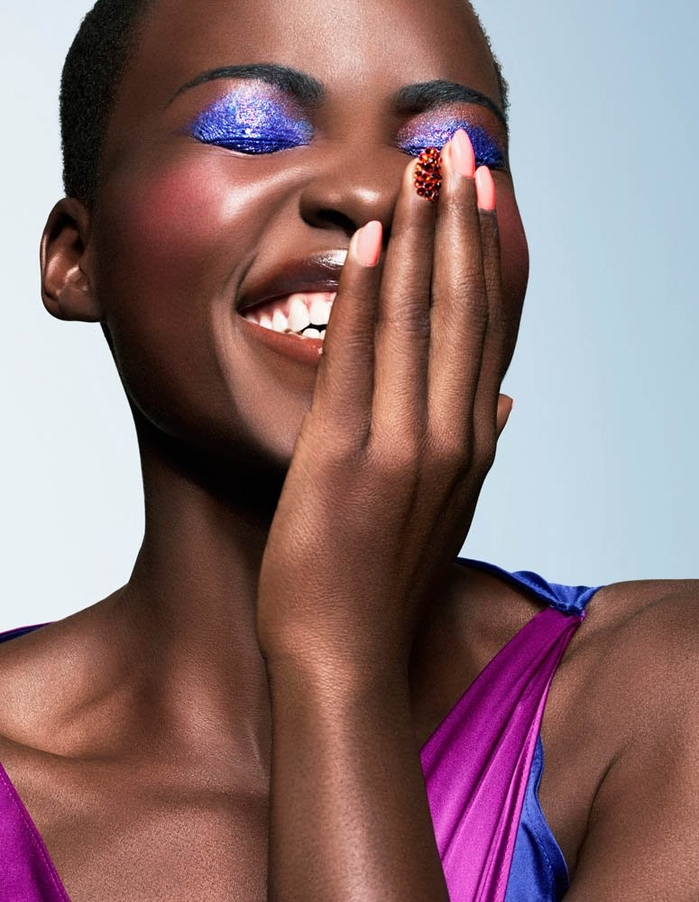

In Their Words: Lupita Nyong’o on beauty
In February 2014, days before she won an Oscar, Lupita Nyong'o gave a speech about her skin, her mother and what beauty can and can't do for you. It still lands.

You can't eat beauty. It doesn't feed you.
Lupita Nyong'o, quoting her mother, February 2014
The momentA luncheon, a letter
On 27 February 2014, Lupita Nyong'o was honoured at Essence's Black Women in Hollywood luncheon in Los Angeles. She was weeks into an awards season that would end with an Oscar for 12 Years a Slave, and she could have given a thank-you speech. Instead she read out a letter from a young girl.
The girl wrote that she had been about to buy skin-lightening cream, and that seeing Lupita, dark-skinned and successful, had changed her mind.
The storyPraying to wake up lighter
Lupita then told the room about her own childhood. Teased about her dark skin, she used to pray to wake up lighter, and every morning she was disappointed. She bargained with God, she said, promising to give things up in exchange. Nothing changed.
As a teenager she saw the South Sudanese model Alek Wek become a star, a dark-skinned woman celebrated on the world's biggest runways, and for the first time she felt seen. But the people around her still preferred light skin.
The lessonWhat her mother meant
Her mother used to tell her that you can't eat beauty, that it doesn't feed you. It took Lupita years to understand it. Beauty, she came to believe, isn't something you can acquire or live off. What sustains you is compassion, for yourself and for the people around you.
She closed by hoping that young girls watching her would feel the validation of their outer beauty, and then get to the deeper business of being beautiful inside, the kind of beauty, she said, that has no shade to it.
Why it still mattersTwelve years later
The pressure to be lighter hasn't gone away. That is why this speech keeps being shared more than a decade on. It isn't a celebrity telling you to love yourself. It's someone admitting she once didn't, and explaining what changed.